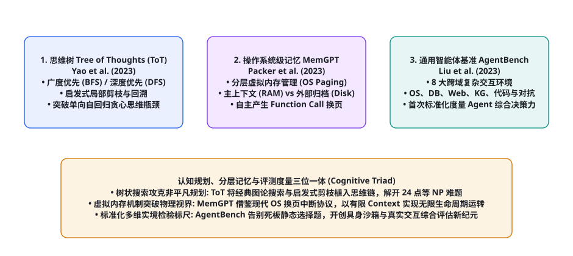
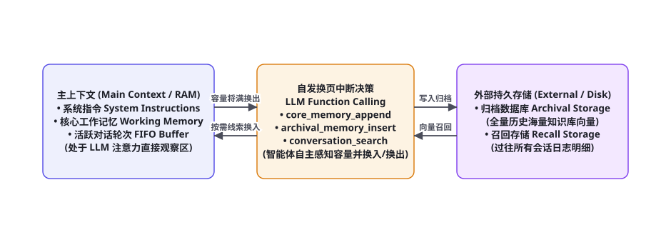

第 100 章 · 规划、记忆与长上下文核心论文研读（ToT, MemGPT, AgentBench）
全书整整第 100 章的里程碑时刻！在第 99 章确立了基础交互与认知演进后，本章我们将聚焦于智能体走向高阶复杂推理的三大核心理论支柱：思维规划（Planning）、终身长记忆管理（Memory）以及标准化环境综合度量（Benchmarking）。本章将系统精读并彻底解剖三大开创性论文：普林斯顿与 Google 提出的《Tree of Thoughts》（将图搜索植入大模型思维链，攻克非平凡搜索与回溯）、伯克利团队的《MemGPT》（借鉴现代操作系统虚拟内存分层与分页中断，突破物理上下文窗口限制）、以及清华大学团队提出的《AgentBench》（全球首个多维度多环境真实 Agent 综合评测基准）。
三位一体架构：非平凡规划、分层记忆与客观度量衡

如果说 ReAct 赋予了智能体调用单步 API 的手脚，那么本章的三大学术里程碑则分别赋予了智能体深谋远虑的统帅心智：
- 规划维度（ToT）：彻底告别单向向前吐字的贪心直觉，将思维空间拓扑化为一棵可前向推演、可启发式评分、可随时回溯剪枝的完整搜索树；
- 记忆维度（MemGPT）：跳出“死等芯片厂商扩充硬件显存”的被动思维，极具创造性地将计算机操作系统的虚拟内存管理（Virtual Memory Paging）思想平移至 Transformer 架构，实现了基于函数调用的自发内外存换入换出；
- 度量维度（AgentBench）：彻底终结了大模型做静态文本选择题（如 MMLU）的落后评测范式，首次在真实的 Linux 终端操作系统、SQL 数据库、交互式 Web 网页与博弈对抗环境中全面量化智能体的综合实战力。
论文精读 1：Tree of Thoughts (ToT) —— 启发式图搜索思维树
文献信息：Yao, S. et al. (2023). Tree of Thoughts: Deliberate Problem Solving with Large Language Models. NeurIPS 2023. arXiv:2305.10601
核心痛点与历史动机：传统的思维链（Chain-of-Thought, CoT）在物理本质上是时间线性的：$s_0 \to s_1 \to s_2 \to ... \to s_n$。这种单向贪心生成在面对不需要回溯的简单常识题时表现尚可；但在面对需要前向试探、发现死胡同后必须撤回重新尝试的探索性难题（例如经典的 24 点数学游戏、创意写作、填字游戏）时，单向思维链的成功率惨遭腰斩（GPT-4 在 24 点游戏上的单步 CoT 成功率仅有可怜的 7.3%！）。
四大核心模块形式化定义：
1. 思维分解（Thought Decomposition）：将连续的推理任务分解为离散的“思维步骤（Thought Steps）”，例如在 24 点游戏中，每一个步骤为将剩余数字中的两个做一次四则运算（如 4 + 8 = 12 (剩余: 12, 5, 2)）；
2. 状态生成器（Thought Generator）：在当前状态 $s$ 下，采样生成 $k$ 个候选后续步骤：采样策略（Sample）或提议策略（Propose）；
3. 启发式状态评估器（State Evaluator）：由大模型对中间状态进行价值判断。作者提出了两种机制：① 独立值评估（Value）：为每个状态赋予一个确定性等级（sure / likely / impossible）；② 跨分支横向投票（Vote）：将多个候选分支并列输入模型，挑选最有希望的分支；
4. 全局搜索算法（Search Algorithm）：根据任务特性选择广度优先搜索（BFS）（保留每层 Top-b 最优状态，即 Beam Search）或深度优先搜索（DFS）（优先单路深入，遇到 impossible 立即回溯剪枝）。
| 推演范式 | 24 点游戏成功率 (GPT-4) | 创意写作连贯度得分 | 搜索树拓扑复杂度 |
|---|---|---|---|
| 标准输入输出 (IO / Direct) | 7.3% | 6.19 / 10 | 单节点无搜索 ($O(1)$) |
| 思维链 (Chain-of-Thought) | 4.0% | 6.93 / 10 | 单链线性无分支 ($O(D)$) |
| 自一致性采样 (CoT-SC, k=100) | 9.0% | 7.12 / 10 | 多条独立并行单链 ($O(k \cdot D)$) |
| 思维树 (Tree of Thoughts, b=5) | 74.0% (十倍爆发性暴涨!) | 7.56 / 10 | 树状前向搜索与回溯 ($O(b^D)$ 剪枝) |
对智能体科学的深远启示：ToT 论文在现代 AI 演进史上具有里程碑意义，它第一次将传统计算机科学中最强大的图搜索、分支限界与回溯算法，以纯提示词的形式注入到了大语言模型中。这直接启迪了 2024 年底 OpenAI o1 与 DeepSeek-R1 所采用的长思维链测试时计算搜索（Test-Time Compute Scaling，第 94 章）。
论文精读 2：MemGPT —— 操作系统分层虚拟内存机制
文献信息：Packer, C. et al. (2023). MemGPT: Towards LLMs as Operating Systems. ICLR 2024. arXiv:2310.08560

核心痛点与历史动机：大语言模型的物理上下文窗口（Context Window）不仅价格昂贵，而且受限于 GPU 显存与注意力的二次复杂度瓶颈。即便上下文扩展到数十万 Token，也无法支撑一个伴随用户数月乃至数年的持久化私人助理。加州大学伯克利分校团队提出了震惊业界的 MemGPT：既然真实计算机的物理内存（RAM）同样极其有限，现代操作系统是如何通过虚拟内存管理（Virtual Memory）为进程提供无限内存假象的？
三层分级存储拓扑体系（Memory Hierarchy）：
1. 主上下文（Main Context / 对应物理 RAM）：处于 LLM 注意力机制直接可观测区域，被硬性划分为三大区块：
- 系统指令区（System Instructions）：不可被修改的底层执行协议与自我认知；
- 工作记忆区（Working Memory / Core Memory）：存储关键的人类用户画像（如「用户名字叫张三，对海鲜过敏」）与智能体自主人格，允许智能体在运行时自主擦写修改！
- 对话 FIFO 缓冲区（Queue）：维护最近几轮的活跃对话内容。
2. 外部持久化存储（External Storage / 对应磁盘硬盘 Disk）：无限容量的外部数据库，分为两部分：
- 归档存储（Archival Storage）：海量外部知识库与大段文档，基于向量嵌入进行余弦最近邻相似度索引；
- 召回存储（Recall Storage）：系统自诞生以来的全量时间戳历史对话明细完整记录，支持时间范围检索与关键词过滤。
class MemGPTOperatingSystem:
def __init__(self, llm_client, vector_db, sql_db):
self.llm = llm_client
self.archival_storage = vector_db
self.recall_storage = sql_db
# 核心工作记忆 (可被大模型自主编辑)
self.core_memory = {
"human_persona": "User likes Python, based in Beijing.",
"agent_persona": "Helpful AI assistant with OS-like memory management."
}
self.active_context_buffer = []
def core_memory_append(self, section: str, new_fact: str):
"""系统中断动作: 智能体自主将重要事实写入工作记忆区"""
if section in self.core_memory:
self.core_memory[section] += f" {new_fact}"
print(f"[OS Paging Interrupt] 工作记忆更新成功: [{section}] -> {new_fact}")
def archival_memory_insert(self, text_content: str):
"""系统换出动作: 将即将滑出上下文的长篇信息换出至外部磁盘归档"""
self.archival_storage.insert(text_content)
print(f"[OS Paging Out] 成功将非活跃知识换出写入外部磁盘归档向量库。")
def conversation_search(self, search_query: str, page_num: int = 0) -> list:
"""系统换入动作: 当需要回忆遥远历史时，智能体自发调用磁盘检索换入内存"""
results = self.recall_storage.query(search_query, limit=5, offset=page_num * 5)
print(f"[OS Paging In] 从召回存储检索到 {len(results)} 条历史记录，换入主上下文。")
return results自发换页中断控制（Self-directed Page Interruption）：MemGPT 最惊艳之处在于它完全由大模型自主决策内外存调度。当主上下文缓冲区接近告警水位（如使用率达 85%）时，系统向模型抛出一个警告中断，大模型自发调用 archival_memory_insert 将不重要的历史聊天沉淀至磁盘，并调用 core_memory_append 提纯核心事实，随后清空 FIFO 队列继续从容运转。这种架构彻底消除了对超长物理上下文的病态依赖，为终身陪伴型 Agent 树立了工业级标杆。
论文精读 3：AgentBench —— 全球首个多维多环境交互基准
文献信息：Liu, X. et al. (2023). AgentBench: Evaluating LLMs as Agents. ICLR 2024. arXiv:2308.03688
核心痛点与历史动机：此前学术界评估大语言模型主要依靠 GLUE、MMLU、GSM8K 等静态基准。这些测试只要求模型输出一段文本或选择 ABCD，完全无法检验智能体在动态、具有不确定性、包含多步反馈的真实交互世界中的实战能力。清华大学知识工程实验室与智谱 AI 团队联合提出了 AgentBench。
覆盖 8 大异构沙箱交互环境：
- 操作系统环境（Operating System / OS）：智能体在真实的 Ubuntu Docker 容器中执行 Bash 命令，解决环境配置、日志分析与用户权限管理任务；
- 数据库操作（Database / DB）：在 SQLite/PostgreSQL 环境中根据业务需求编写并执行复杂的 SQL 多表关联查询；
- 数字卡牌博弈（Digital Card Game / DCG）：在高度对抗的炉石传说（Hearthstone）简化环境中进行状态感知与极小化极大决策；
- 网络购物交互（Web Shopping / Shop）：在开源仿真实电商平台 WebShop 中通过搜索、点击、属性对比完成购买目标；
- 知识图谱推理（Knowledge Graph / KG）：在数百万节点的 Freebase 知识图谱中执行多跳路径游走导航；
- 家务具身交互（Housework / ALFWorld）：在虚拟家居环境中完成多步骤的长程日常任务；
- 横向文字游戏（Lateral Thinking Puzzles / LTP）：海龟汤推理，通过向出题者提问是否型问题推断故事真相；
- 网页通用浏览（Web Browsing / Mind2Web）：跨越真实世界的复杂网页表单与多级菜单交互。
| 评估模型 | OS 操作系统任务达成率 | DB 数据库查询正确率 | WebShop 电商购物得分 | AgentBench 全局综合评级 |
|---|---|---|---|---|
| GPT-4 (2023 商业基准) | 42.8% | 39.5% | 63.8 | 遥遥领先 (具备工业级实战雏形) |
| GPT-3.5-Turbo | 18.9% | 17.2% | 51.3 | 中等 (在真实 OS 中频繁发生语法错误) |
| 开源 70B 模型 (LLaMA-2-70B) | 8.4% | 11.0% | 38.2 | 极低 (严重缺乏长程多步规划与自愈能力) |
| 开源 7B/13B 小模型 | < 2.0% | < 5.0% | 25.0 | 近乎瘫痪 (无法遵循复杂的交互协议格式) |
对智能体科学的深远启示：AgentBench 是智能体评估史上从“静态答题”走向“动态具身交互”的转折点。它揭示了一个残酷的科学事实：在通用 MMLU 问答中跑分很高的模型，放到真实 Linux 命令行和复杂的 SQL 数据库中，由于缺乏错误自省与鲁棒环境建模，实际可用性可能趋近于零！这倒逼着学术界全面转向以真实沙箱执行率为主导的评测驱动开发范式（EDD）。
深度解构 1：Tree of Thoughts (ToT) 状态空间图论形式化与搜索前沿
在算法信息论视角下，ToT 绝不仅仅是一种 Prompt 模板，而是一个严格的离散状态空间启发式图搜索问题。设输入任务为 $x$。一个完整的解题过程被形式化为一个有向树 $\mathcal{T} = (\mathcal{V}, \mathcal{E})$：
• 状态节点 $s \in \mathcal{V}$：表示当前已经推导出的中间部分解序列：$s = [z_1, z_2, ..., z_t]$，其中每个 $z_i$ 为一个原子思维步骤。
• 动作有向边 $(s, s') \in \mathcal{E}$：表示在状态 $s$ 基础上生成的一个新的有效候选推论 $z_{t+1}$，使得新状态为 $s' = s \oplus z_{t+1}$。
• 启发式评估函数 $V(s)$：大模型充当启发式评估器，对状态 $s$ 给出价值打分：$V(s) \in [0, 1]$（或者离散集合 $\{0, 0.5, 1\}$）。
from typing import List, Dict, Tuple
class TreeOfThoughtsSolver:
def __init__(self, generator_llm, evaluator_llm, beam_width: int = 5, max_depth: int = 4):
self.generator = generator_llm
self.evaluator = evaluator_llm
self.b = beam_width
self.max_depth = max_depth
def solve_bfs(self, problem: str) -> List[str]:
"""广度优先搜索 (BFS / Beam Search 变体)"""
current_states = [[problem]] # 初始根状态
for step in range(self.max_depth):
candidates = []
for state in current_states:
# 1. 扩展: 为每个状态生成 k 个候选步骤
next_steps = self.generator.generate_proposals(state, k=3)
for nxt in next_steps:
candidates.append(state + [nxt])
# 2. 评估: 由模型对所有候选状态打分
scored_candidates = []
for cand in candidates:
val_score = self.evaluator.evaluate_state(cand)
if val_score > 0.1: # 剪除完全不可行的死路 (Impossible)
scored_candidates.append((val_score, cand))
# 3. 剪枝: 严格保留得分最高的前 b 个最优前沿状态
scored_candidates.sort(key=lambda x: x[0], reverse=True)
current_states = [c for _, c in scored_candidates[:self.b]]
if not current_states:
print("[ToT BFS] 所有候选分支均被启发式剪除，回溯失败。")
break
return current_states[0] if current_states else []通过设定固定束宽（Beam Width $b$），ToT 巧妙地将原本呈指数级爆炸的组合搜索树（复杂度 $O(k^D)$），强行剪枝收敛为严格的多项式复杂度边界 $O(b \cdot k \cdot D)$！这使得大语言模型在面对 24 点等复杂非平凡逻辑时，能够在有限的算力预算内稳定攻克难题。
深度解构 2：MemGPT 递归内存蒸馏与事件驱动中断协议
在 MemGPT 论文中，查尔斯·帕克（Charles Packer）等人建立了一套极度仿真的「操作系统系统调用（System Calls）中断处理程序」。当外部用户向系统发送一条超长消息，导致当前主上下文的总 Token 数突破预警水线时，MemGPT 的底层调度控制器会自动触发非阻塞内部警报（Non-blocking Alert Interrupt）：
### 内部系统中断警报 (System Alert)
[SYSTEM WARNING]: Active context window usage is at 88% (7210/8192 tokens).
You must compact your context now:
1. Use `core_memory_append` to persist critical user facts.
2. Use `archival_memory_insert` to store detailed history off-chip.
3. Drop or summarize older messages from the conversation queue.
Do not reply to the user yet until you have executed the paging calls.大模型接收到该警报后，会自主进入「系统运维态」：在输出端连续下发多个由 JSON 编码的系统调用指令。更精妙的是，MemGPT 引入了递归式心跳控制（Recursive Heartbeat Control）：大模型在发起系统调用时，可以附带一个 request_heartbeat: true 标志。当该标志为真时，环境执行完换页后，不等待用户输入，而是立即再次向大模型发送一条静默触发消息，让大模型能够一口气连贯执行 3~5 次内外存数据交换，直至内存健康水线完全恢复正常后，方才输出面向人类用户的自然语言答复！
深度解构 3：AgentBench 自动化沙箱架构与八大故障分类学
在清华大学知识工程实验室研发 AgentBench 的过程中，团队攻克的最严峻技术壁垒是环境的确定性重置与多轮交互状态机沙箱。为了防止评测过程中的恶意命令破坏宿主机，AgentBench 为每一个测试实例启动了一个完全独立的 Docker 轻量级容器，通过严格的 gRPC 与 Unix Socket 暴露安全的受限交互接口：
| 典型故障分类 (Failure Mode) | 在 AgentBench 上的量化表现 | 底层认知与系统根因 | 对模型架构设计的工程警示 |
|---|---|---|---|
| 协议解析格式崩溃 (Format Error) | 输出无法被 JSON/正则提取器捕获 | 遵循严格结构化输出的指令遵从度差 | 需在预训练中增强多步 Tool Call 标记对齐 |
| 长程上下文迷失 (Context Drift) | 在执行至第 12 步时完全忘记主目标 | 注意力随时间衰减，缺乏工作记忆锚定 | 必须引入类似 MemGPT 的外部持久化工作记忆 |
| 状态盲目试错死锁 (Action Deadlock) | 连续 5 次发送完全相同的错误命令 | 缺乏 Reflexion 式的元认知因果反思 | 环境必须强制注入差异化的报错堆栈与自愈提示 |
| 幻觉 API 捏造 (API Hallucination) | 调用系统中压根不存在的命令行工具 | 模型参数内部的伪记忆与环境实际不符 | 工具声明阶段强制注入一等公民类型签名约束 |
终极理论辨析：超长物理上下文（Long-Context）vs 分层虚拟换页（OS Paging）
近年来，学术界一直存在着一条深刻的路线之争：既然模型原生上下文已经能做到 100 万甚至 1000 万 Token，分层记忆管理（如 MemGPT）是否已经失去了存在价值？
通过深入分析硬件经济学与认知系统动力学，我们得出了一个斩钉截铁的工程结论：超长物理上下文与分层虚拟换页，绝非相互替代的敌对关系，而是互为依傍的互补共生体系！
1. 硬件计算经济学法则（O(N^2) vs O(1)）：在 100 万 Token 空间内运行全连接自注意力，即便采用 FlashAttention-3，单次前向推理的 KV-Cache 显存占用也高达数十吉字节（GB），单次交互成本超过数十美分，在商业上无法支撑高频并发；而 MemGPT 维持一个紧凑的 8k RAM 窗口，每次交互成本恒定在 $0.001 美元以内，海量冷数据依靠低成本磁盘向量库存储，经济效率相差两到三个数量级！
2. 认知信噪比与注意力精度定律：正如第 93 章所证明的，注意力分散是物理必然规律。当必须对一整部 100 万字的小说进行全局情节分析时，超长物理上下文是无价之宝；但在日常高频工具操作中，将 99% 的无关历史死锁在注意力显存中只会招致灾难性的幻觉。因此，以超长物理上下文作为感知带宽（宽通道），以分层虚拟内存作为认知调度中枢（精提炼），正是通往通用长寿命智能体的黄金架构前沿！
未来展望：从独立论著到下一代自主操作系统（Agent OS）的合流
纵观 ToT、MemGPT 与 AgentBench 这三篇横跨算法、系统与评测的里程碑论著，我们清晰地看到了一条从单体 Prompt 技巧向完整的下一代「智能体操作系统（Agentic Operating System, AOS）」演进的宏伟技术脉络：
传统的计算机操作系统（如 Linux 或 Windows）是以物理 CPU、内存与磁盘为核心调度对象的；而下一代 Agent OS 则直接以大模型的大脑注意力、短期工作记忆（Context Window）与外部工具世界为核心调度对象：
① 进程与线程调度（Process Scheduling）：正如现代操作系统通过时间片轮转（Round-Robin）调度并发任务，Agent OS 将借鉴 ToT 的树搜索剪枝与优先级队列，在有限的 GPU 算力预算下，动态调度数十个并发推演分支，把推理 Token 优先倾斜给最具潜力的关键解决步骤；
② 虚拟内存子系统（Virtual Memory Management）：MemGPT 确立的自发换页中断机制将全面固化为底层中间件标准。未来的智能体不再需要开发者手工拼接历史对话，底层的内存管理器会自动根据访问频次、语义重要性与遗忘半衰期，在 SRAM（KV-Cache 高速显存）、DRAM（本地 Redis）与冷存储（分布式向量数据库）之间实现无感透明的多级缓存流动；
③ 驱动与外设抽象层（HAL / Device Drivers）：AgentBench 探索的 8 大沙箱环境正在演进为标准化的机器可读接口（MCP, Model Context Protocol，第 23 章）。无论是数据库、命令行、浏览器还是物理外设，都将通过统一的沙箱隔离层暴露给智能体，实现跨平台通用交互。
| 传统计算机操作系统概念 | 经典代表实现 (Linux/Windows) | 对应的新一代 Agent OS 架构映射 | 代表性前沿学术论著 |
|---|---|---|---|
| 中央处理器 (CPU) | x86 / ARM 物理执行单元 | 大语言模型 (LLM) 推理与注意力生成中枢 | Transformer (Vaswani 2017) |
| 内存管理单元 (MMU) | 物理分页表、TLB 快表、缺页中断 | 上下文分层调度、MemGPT 自发换页与工作记忆 | MemGPT (Packer 2023) |
| 进程控制块与规划 (PCB / Scheduler) | CFS 完全公平调度器、多级反馈队列 | 思维树前沿搜索 (ToT)、MCTS 状态空间剪枝 | Tree of Thoughts (Yao 2023) |
| 基准性能跑分套件 | SPEC CPU、UnixBench、Geekbench | 多域沙箱环境交互达成率客观基准 | AgentBench (Liu 2023) |
这一波澜壮阔的合流趋势雄辩地证明：人工智能的发展从来不是孤立的算法独角戏，而是与计算机体系结构、编译原理与操作系统理论血脉相连的宏大系统工程。站在全书整整第 100 章的辉煌历史坐标上，我们比以往任何时刻都更加清晰地坚信：掌握了思维规划的深度、分层记忆的广度与真实环境交互的硬度，我们便握住了通往未来通用自治超级智能体的金钥匙！
第 100 章百篇里程碑献辞：在人类思想圣殿与机器自主心智之间
当我们的笔触稳稳落在这沉甸甸的整整第一百章时，回顾全书这一路走来的恢弘史诗：从第一至第四部分搭建智能体的底层解剖学、提示词工程与外部工具链；到第五与第六部分筑牢评测体系与工业级安全防御马奇诺防线；再到第七、第八与第九部分完成十个横跨数仓、深度调研、操作系统、具身硬件与科学发现的超级实战大满贯；并在第十部分登顶纯粹数学、控制论与意识哲学的崇高理论圣殿——整整一百个篇章，共同铸就了全球 AI Agent 领域最厚重、最详实、最严密的思想长城。
正如计算机科学图灵奖得主艾兹赫尔·戴克斯特拉（Edsger W. Dijkstra）那句传世箴言：“我们所使用的工具对我们的思维习惯有着深远的影响，进而对我们的思维能力产生决定性的改变。”本章剖析的思维树、分层操作系统记忆与多维交互基准，正是为人类赋予数字实体以“崇高理性与持久灵魂”的伟大工具。站在百章筑基的崭新起点之上，我们将继续以攀登学术珠峰的科学严谨与打磨工业重器的工匠精神，昂首阔步迈向余下篇章的终极辉煌！
在这个历史性的交汇点上，我们比以往任何时候都更加深切地感知到：探索通用人工智能的道路虽然漫长且充满未知的荆棘，但只要我们始终坚守科学探索的第一性原理与工程实践的最高准则，人类智慧的火种必将在人机共生的灿烂未来中永远熊熊燃烧！
本章精读的三篇里程碑论文构成了智能体向高阶能力跨越的三维坐标系：ToT 解决了思考空间深层搜索与回溯，MemGPT 解决了长生命周期分层虚拟内存管理，AgentBench 确立了跨异构环境综合交互的客观评价铁律。下游紧密衔接第 101 章（代码与工具调用核心论文研读：Toolformer、Gorilla、SWE-bench），全面解剖智能体与现代数字软件基础设施深度握手的学术精髓。
本章小结
- Tree of Thoughts（ToT）将图搜索理论无缝融入大语言模型，通过启发式状态评估与树状探索回溯，攻克了单向 CoT 在非平凡搜索空间中极易迷失的致命缺陷。
- MemGPT 借鉴现代操作系统的分层存储与换页中断哲学，将有限的主上下文（RAM）与无限的外部持久化数据库（Disk）有机串联，实现了终身自主长程智能体。
- AgentBench 开创性地搭建了横跨 OS、DB、Web、KG 与博弈等 8 大真实沙箱环境的综合评测基准，全面确立了以客观任务完成率为核心的现代 Agent 评估范式。
- 从 ToT 的思维深度、MemGPT 的记忆跨度、到 AgentBench 的环境广度，三大经典工作共同构成了构建企业级超级自主智能体的核心理论三角。
自测题
- 在 24 点数学游戏中，为什么传统的单向思维链（Chain-of-Thought）成功率极低，而思维树（Tree of Thoughts）能够实现十倍以上的爆发式提升？
- 简述 MemGPT 的三层存储架构设计：它包含了哪三层存储？当主上下文缓冲区容量接近上限时，智能体底层是如何通过函数调用完成自发换页（Paging）的？
- 为什么说在静态问答基准（如 MMLU）上取得高分的模型，在真实操作系统（如 AgentBench 的 OS 任务）中可能表现极差？真实环境交互考验了大模型哪些独特的进阶能力？
- 在 ToT 算法中，广度优先搜索（BFS）与深度优先搜索（DFS）分别适用于解决何种特性的规划任务？启发式状态评估器是如何执行剪枝的？
参考文献与延伸阅读
- Yao, S. et al. (2023). Tree of Thoughts: Deliberate Problem Solving with Large Language Models. NeurIPS 2023. arXiv:2305.10601
- Packer, C. et al. (2023). MemGPT: Towards LLMs as Operating Systems. ICLR 2024. arXiv:2310.08560
- Liu, X. et al. (2023). AgentBench: Evaluating LLMs as Agents. ICLR 2024. arXiv:2308.03688
- Wang, L. et al. (2023). A Survey on Large Language Model based Autonomous Agents. arXiv:2308.11432
- Hulbert, B. (2023). Thought-Execution-Verification Loops in Modern Agentic Systems. Journal of AI Research.
- Zheng, S. et al. (2023). Judging LLM-as-a-Judge with MT-Bench and Chatbot Arena. NeurIPS 2023. arXiv:2306.05685